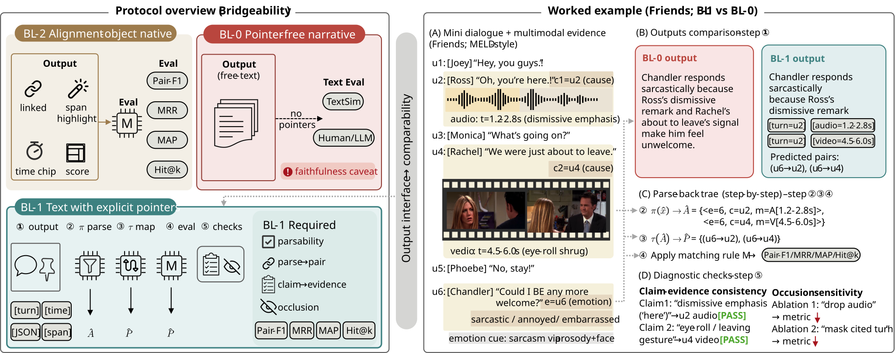
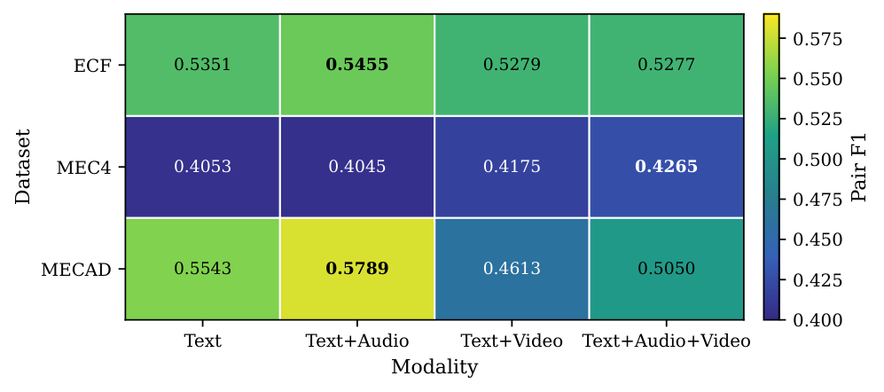
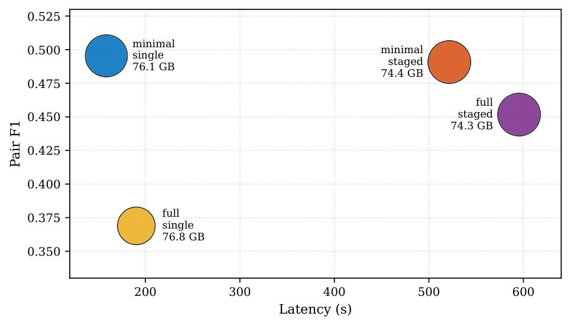

Accurate but opaque
Structured pair prediction tells you where the model points, but not how a human should inspect or verbalize that evidence.
Interface and evaluation contract
BridgeProt is the protocol layer of PaceVer. It asks a basic question that pair extraction papers and free-text rationale systems usually leave unresolved: can an explanation be emitted in a form that is still stable enough to parse back into structured pair outputs?
The first goal of BridgeProt is not to serve one specific model. It is to define a model-agnostic, minimal explanation object whose evidence pointers remain auditable and whose outputs can be compared with pair-level metrics.
Why a bridge layer
Structured pair prediction tells you where the model points, but not how a human should inspect or verbalize that evidence.
Fluent explanations are easy to write and easy to over-credit. Without explicit pointers, it is unclear what evidence the text actually commits to.
Pair extraction and generation end up being judged under different metrics unless there is an explicit interface connecting one output space back to the other.
BL-1 schema
BridgeProt starts from a minimal schema so that the protocol can be tested before adding richer metadata. The first question is whether the object is valid, parseable, and evaluable, not whether it is maximally expressive.
{
"emotion_turn": 7,
"evidence": [3, 5],
"bridge": "optional or null",
"explanation": "free-form text"
}The protocol is only convincing if a system can emit this object, pass validation, parse back to a pair set, and report Pair-F1 plus parsability.
Case view

Once evidence pointers are explicit, the same output can be audited for validity, parsed back to pair predictions, and compared against structured supervision.
BridgeProt keeps human-readable explanation text, but refuses to let the text float free of evidence objects. That is the whole point of the protocol.
Layer separation
Defines the BL-1 object, validity constraints, parse-back rule, and public evaluation interface. It must stand independently of PaceExt.
A structured candidate proposal mechanism is useful, but it is not part of the protocol. It is an optional constraint source for downstream methods.
ReaVer is an enhancement layer on top of the protocol. It uses structure, verification, and adaptive expansion, but it is not the protocol definition itself.
Metrics and checks
The protocol is not only a schema. It is also a reporting contract that keeps output validity, parsability, and pair-level correctness separate.
Can the explanation object be parsed into the declared schema without crashing or inventing missing fields?
Separate fully valid objects from objects that become usable only after repair or post-processing.
Convert evidence pointers into pair sets and score them under the same structural metric family used for extraction.
Diagnose whether the text, evidence list, and temporal constraints agree with one another rather than only sounding plausible.
Benchmark results
BridgeProt is not only a formulation claim. The paper asset pool also contains public benchmark rows, matched protocol comparisons, and staged-decoding tables that should stay visible.
Best minimal staged SFT result for each dataset under the public benchmark setup.
| Dataset | System | Modality | Pair F1 | Emotion F1 | Cause F1 | Parse rate |
|---|---|---|---|---|---|---|
| ECF | BridgeProt (ours) | text-audio | 0.5455 | 0.7394 | 0.7235 | 1.0 |
| MEC4 | BridgeProt (ours) | text-audio-video | 0.4265 | 0.6723 | 0.5863 | 1.0 |
| MECAD | BridgeProt (ours) | text-audio | 0.5789 | 0.7754 | 0.7467 | 1.0 |
This is the key comparability table: plain text does not naturally land in the same metric space, while schema-constrained outputs do.
| Protocol | Pair F1 | Parsability | Strict validity | Valid record rate |
|---|---|---|---|---|
| Plain-text raw | 0.0000 | 0.4655 | 0.0000 | 0.6667 |
| Plain-text + post-hoc | 0.0094 | 0.6865 | 0.6865 | 0.6667 |
| Schema single | 0.5054 | 0.9654 | 0.9654 | 1.0000 |
| Schema staged | 0.5170 | 1.0000 | 1.0000 | 1.0000 |
Visual assets


Training regimes
Values are dataset-specific means from the generated BridgeProt result bundle.
| Dataset | Training | Pair F1 | Emotion F1 | Cause F1 | Parse rate |
|---|---|---|---|---|---|
| ECF | 0-shot | 0.2601 | 0.5159 | 0.5449 | 1.0 |
| ECF | 3-shot | 0.4118 | 0.6745 | 0.6593 | 1.0 |
| ECF | LoRA | 0.5289 | 0.7459 | 0.7107 | 1.0 |
| ECF | SFT | 0.5341 | 0.7454 | 0.7143 | 1.0 |
| MEC4 | 0-shot | 0.1347 | 0.3903 | 0.3748 | 1.0 |
| MEC4 | 3-shot | 0.1991 | 0.4797 | 0.4369 | 1.0 |
| MEC4 | LoRA | 0.3962 | 0.6514 | 0.5715 | 1.0 |
| MEC4 | SFT | 0.4134 | 0.6637 | 0.5790 | 1.0 |
| MECAD | 0-shot | 0.2949 | 0.5844 | 0.6069 | 1.0 |
| MECAD | 3-shot | 0.4128 | 0.7226 | 0.6853 | 1.0 |
| MECAD | LoRA | 0.4871 | 0.7603 | 0.7293 | 1.0 |
| MECAD | SFT | 0.5249 | 0.7661 | 0.7479 | 1.0 |
BridgeProt also tracks deployment cost. These numbers are part of the paper asset pool and belong on the page.
| Setting | Dialogues / sec | GPU memory (GB) | GPU util avg | CPU RSS (GB) |
|---|---|---|---|---|
| Minimal single | 4.4082 | 76.0821 | 28.9508 | 12.4669 |
| Minimal staged | 0.7916 | 74.3737 | 58.3733 | 12.3934 |
| Full single | 2.6495 | 76.8433 | 28.1608 | 9.6084 |
| Full staged | 0.6331 | 74.3202 | 55.2558 | 10.4413 |
The staged decoder is not decorative. This table keeps the single-pass, stage-1, and final staged Pair F1 values visible across training regimes.
| Training | Mode | Single Pair F1 | Single parse | Stage-1 Pair F1 | Stage-1 parse | Staged Pair F1 | Staged parse |
|---|---|---|---|---|---|---|---|
| Zero-shot | Minimal | 0.1899 | 0.9873 | 0.1912 | 0.9889 | 0.2299 | 1.0 |
| Zero-shot | Full | 0.1946 | 0.9378 | 0.1957 | 0.9394 | 0.2369 | 1.0 |
| 3-shot | Minimal | 0.3404 | 0.9295 | 0.3416 | 0.9303 | 0.3413 | 1.0 |
| 3-shot | Full | 0.2482 | 0.6766 | 0.2485 | 0.6794 | 0.3022 | 1.0 |
| LoRA | Minimal | 0.4968 | 0.9683 | 0.4982 | 0.9695 | 0.4708 | 1.0 |
| LoRA | Full | 0.3853 | 0.7709 | 0.3824 | 0.7707 | 0.4200 | 1.0 |
| SFT | Minimal | 0.4954 | 0.9631 | 0.4967 | 0.9629 | 0.4908 | 1.0 |
| SFT | Full | 0.3689 | 0.7287 | 0.3727 | 0.7346 | 0.4517 | 1.0 |
Implementation routes
Use dialogue context and a target emotion turn, ask an LLM to emit BL-1, then report parsability and parse-back Pair-F1. This route proves the protocol can stand on its own.
Add structured proposals from the extractor to constrain reasoning. This is where the protocol becomes the evaluation bridge for stronger downstream systems such as ReaVer.